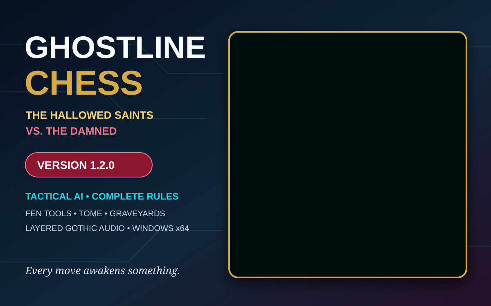

Tactical Damned AI
Material-aware two-ply minimax search, alpha-beta pruning, capture-first ordering, check and checkmate scoring, and background calculation.
A Haunted Echoes Studios Release
The Hallowed Saints and the Damned battle across a gothic board where every move enters the Tome and every fallen piece enters the Graveyard.
Version 1.2.0 adds a tactical computer opponent while preserving the complete rules engine, FEN tools, current faction artwork, and layered horror audio.
Version 1.2.0
Material-aware two-ply minimax search, alpha-beta pruning, capture-first ordering, check and checkmate scoring, and background calculation.
Castling, en passant, all promotion choices, king safety, checkmate, stalemate, insufficient material, repetition, and fifty-move draws.
Algebraic move history, current FEN, load/copy tools, counters, and captured-piece Graveyards preserve the battle state.
Custom Hallowed Saints and Damned Souls pieces replace the original prototype artwork throughout the active build.
A continuous gothic suite, randomized environmental creaks, and twenty-four faction-and-piece move and capture cues play through NAudio.
AI analysis runs away from the interface thread so the Windows Forms game remains responsive while the Damned calculate their reply.

This self-contained Windows x64 prerelease includes the current tactical AI build. Visual Studio and a separate .NET installation are not required.
Follow the path from the first board prototype through complete rules, faction artwork, audio, and tactical AI.
Open the Ghostline Chess Development Log